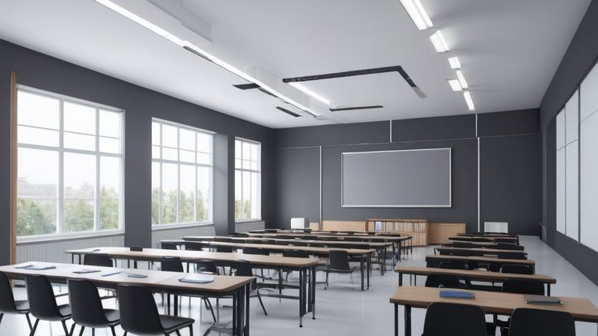
Classrooms
Classrooms are learning spaces where teachers teach lessons and students gain knowledge in different subjects. They are equipped with desks, chairs, boards, and learning materials to support education.
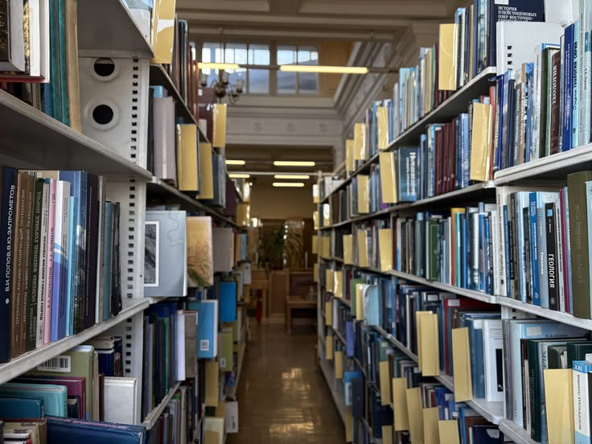
Library
The library is a quiet place where students can read books, study, research, and improve their knowledge through educational resources.

Science Laboratories
Science laboratories are specially equipped rooms where students carry out practical experiments in subjects like Biology, Chemistry, and Physics.
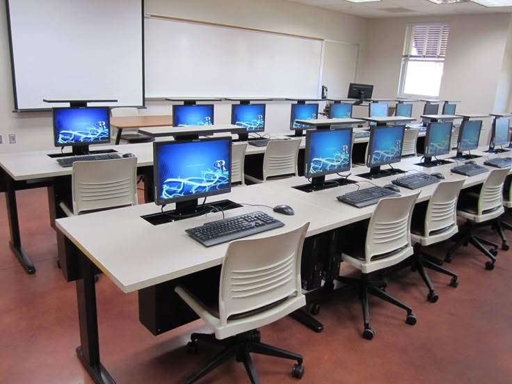
Computer Labs
Computer laboratories provide students with access to computers and the internet for learning digital skills, typing, coding, and research.
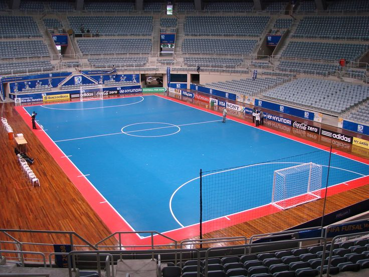
Sports Facilities
Sports facilities include fields, courts, and playgrounds where students participate in games, exercise, and physical fitness activities.
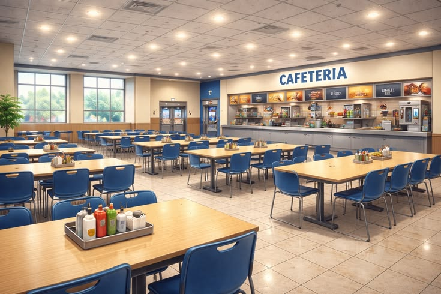
Cafeteria/Canteen
The cafeteria or canteen is a place where students and staff can buy and eat healthy meals and refreshments during school hours.
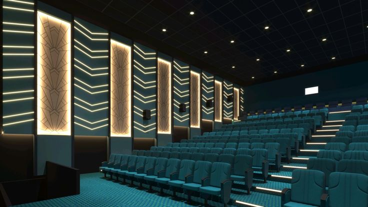
Auditorium/Hall
The auditorium or hall is a large space used for assemblies, meetings, school performances, seminars, and special events.
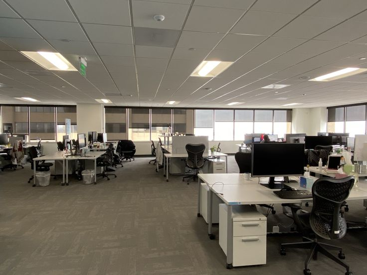
Administrative Offices
Administrative offices are rooms where the principal, teachers, and school staff manage school activities, records, and student affairs.
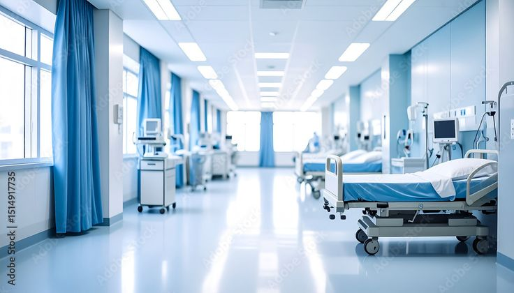
Health Clinic/Sick Bay
The health clinic or sick bay provides first aid and basic medical care for students and staff who feel unwell or get injured.
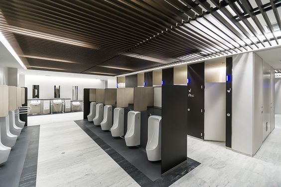
Toilets and Sanitation Facilities
These facilities help maintain cleanliness and proper hygiene by providing safe and clean toilets, sinks, and washing areas.
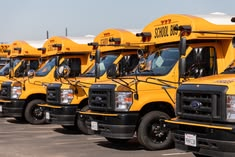
Transportation Services
Transportation services include school buses and vehicles that safely transport students and staff to and from school.
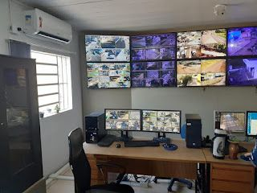
Security Facilities
Security facilities such as fences, CCTV cameras, security guards, and alarms help protect students, staff, and school property.
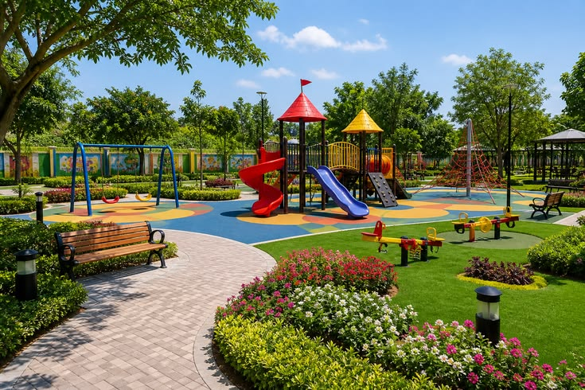
Playground
The playground is an outdoor area where children can play, relax, and participate in recreational activities during break periods.
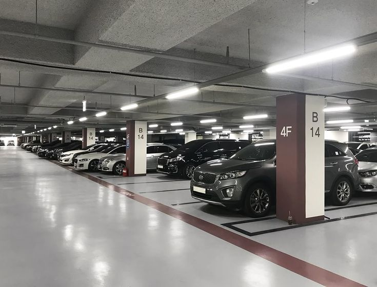
Parking Area
The parking area is a designated space where staff, visitors, and school vehicles can park safely and orderly
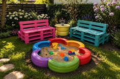
Green Spaces/Garden
Green spaces and gardens make the school environment beautiful, fresh, and peaceful while also supporting relaxation and environmental learning.
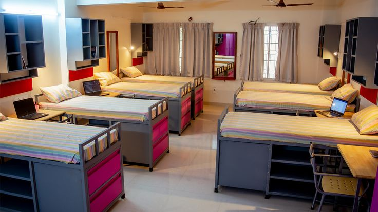
School Hostel
The school hostel provides accommodation for students who live within the school premises, offering a safe and comfortable environment for studying and resting.